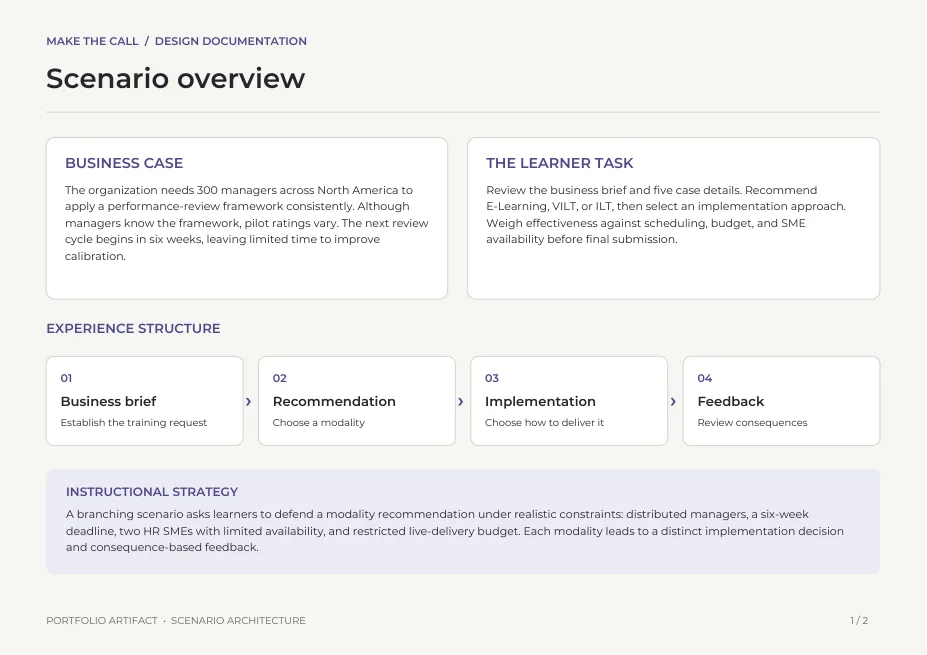

Branching decision scenario · Articulate Storyline 360
Recommend an Approach
A short decision-based experience that puts the learner in the role of an instructional designer. Learners review project constraints, recommend a learning approach, address an implementation challenge, and see the tradeoffs created by their decisions.
Design focus: Branching decisions, consequence-based feedback, variables, and conditional logic.
Learning experience
- Review project details
- Recommend approach
- Address challenge
- See tradeoffs
PRIMARY DELIVERABLE
Interactive scenario
Articulate Storyline 360 · Branching decisions
Launch sample (opens in a new tab)
SUPPORTING ARTIFACT
Scenario design map
Design documentation · 2-page PDF
View scenario map